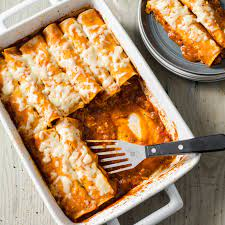

Chicken Enchiladas

Description
Discover the flavors of Mexico with our mouthwatering homemade chicken enchiladas. This classic Mexican dish is a delightful combination of tender chicken, zesty enchilada sauce, melted cheese, and a touch of spice. Whether you're a seasoned chef or a beginner in the kitchen, this recipe is easy to follow and will have your family and friends asking for seconds.
Ingredients
- 1 tablespoon of olive oil, or as needed
- 4 skinless, boneless chicken breast halves
- 1 onion, chopped
- 1 3/4 cups shredded cheddar cheese, divided
- 1/2 pint sour cream
- 1 tablespoon dried parsley
- 1/2 teaspoon dried oregano
- 1/2 teaspoon ground black pepper
- 1 (15 ounce) can tomato sauce
- 1/3 cup chopped green bell pepper
- 1 clove garlic, minced
- 1 tablespoon chili powder
- 1/2 teaspoon salt (optional)
- 1/2 cup water (optional)
- 8 (10 inch) flour tortillas
- 1 (12 ounce) jar taco sauce